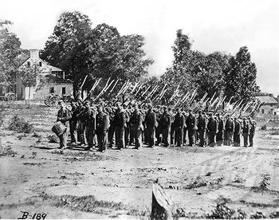

|
In post-Vietnam America, the key word in considering the
psychological state of returning veterans is "trauma."
Specifically, what hardships and trials did the veteran
undergo during his service in the military? Was he placed in
situations in which he experienced anxiety and fear? Was he
exposed to combat, to the death and mutilation of his fellow
warriors, or to the spectacle of enemy soldiers being
slaughtered in battle or, as prisoners, being summarily
executed? Did he encounter disease or discomforts that might
have weakened his psychic defenses or exacerbated his sense
of alienation and unease about being sent far from home and
given the anomalous task of killing other human beings? Did
his bonds to fellow soldiers or to civilians at home somehow
ameliorate his problems and prevent psychological breakdown?
Did an eventual warm homecoming "wash away" disturbing
memories of pain and death?
The Everyday Hardships of Soldiering
In comparing the trauma experienced by the Civil War
soldier with that of the Vietnam veteran or any combatant in
modern twentieth-century armies, one is struck first of all
by the physical hardships that soldiers encountered in what
one man characterized as a "destroying manner of living."
Although the Civil War has been portrayed as the first
modern or industrial war in which machinery such as
locomotives and rifled muskets or ironclad warships and
naval torpedoes were engaged, the infantryman in this war
moved from one place to another mainly on foot. He sometimes
covered ten and twenty miles a day, or even more in the case
of a forced march when troops had to be maneuvered quickly
to come to the aid of embattled and endangered comrades or
to defend or seize key positions. During the Civil War, the
11th Indiana Infantry marched a total of 9,318 miles; during
a key three-and-a-half-month period, the 44th Indiana
Infantry marched over 725 miles, an average march of 10
miles per day when on the move. One Northerner noted in a
letter home: "Walking ten or twelve miles a day will hurt no
one, but walking 12 miles and carrying a knapsack full of
clothing, a blanket, half tent, several days rations, gun,
ammunition, &c, is the hardest kind of work, and makes many
a man wish he was not a soldier." Civil War soldiers quickly
learned to jettison everything from their packs that was not
absolutely essential, and still the task of marching over
long distances could be crushing.
Men were frequently marched through suffocating dust and
under the blazing sun throughout the day, with minimal and
sometimes seemingly no breaks allowed. A New York volunteer
remembered that on a forced march of thirty miles in the
fierce heat of summer, the men had thrown away overcoats,
blankets, and even their knapsacks. Nonetheless many became
violently ill from the exertion, some having convulsions and
others dying from heatstroke. Another soldier recalled that
during such a forced march he had to stop and vomit "every
once in a while and my head ached dreadful." He vomited
eight or ten times during the day, and the last time threw
up blood. An overcome Indiana volunteer fell unconscious,
with his eyes jerking and his tongue protruding out of his
mouth in a type of epileptic fit induced by the heat. Nor
were these torturous marches necessarily merely one- or
two-day ordeals; an Alabama infantryman wrote to his mother:
"I am not very well at this time. We have been on a march
for about nine-teen days ... I am so near marched to death
that I cannot write with any degree of intelligence, and
having lost so much sleep too." The scenery on these marches
was not always calculated to lighten the mental burden
consequent to such physical exertion, as is demonstrated by
the letter of one Rebel soldier to his wife: "i am well as
common except for a bad cold and march most to death ... Mi
dear wife i want you to pray for me i hop i will se you agin
... I have walked over more ded yankes than i ever want to
do agin." Within two weeks this man was killed at the Battle
of Antietam.
Confederate troops in particular also had to deal with
the problem of inadequate (or no) footwear. One Rebel
surgeon lamented in a letter to his wife that she could
hardly believe what the army had recently endured: "Most of
our marches were on graveled turnpike roads, which were very
severe on the barefooted men and cut up their feet horribly.
When the poor fellows could get rags they would tie them
around their feet for protection." Sometimes these forced
marches lasted into or throughout the night, and soldiers
literally learned to walk while asleep or would sometimes
collapse from fatigue and sleep at that spot for hours,
oblivious to all attempts to rouse them and force them to
continue. A Massachusetts volunteer wrote: "I doubt if our
ancestors at Valley Forge suffered more from cold than we
did ... [I] often found that I had been sound asleep while
my legs were trudging along." Accounts of marching three
hundred miles in me rain and mud, with inadequate rations
and rest--only to be thrown immediately into a deadly battle
are not at all unusual in Civil War letters and diaries.
When the health of the Civil War soldier deteriorated to the
point that he could no longer keep up with the unit on the
march, he might become part of a pack of what became known
as "stragglers." One account of such men described the
following:
We met hundreds of stragglers in squads of from two to
fifty--indeed enough to make in themselves, if consolidated,
a large army. The majority of them were sick, however, or
miserably worn. Their countenances are sunken and melancholy
and indifferent almost to stolidity. When left to themselves
they progress very slowly, cooking their own food and
sleeping upon the ground ... They are all thoroughly
disgusted with the life they lead and swear that if ever
they get out of the army they will commit suicide almost
before entering in again.
Such was the centrality of marching to the experience of
the Civil War soldier that when some men were eventually
issued disability discharges, it was not uncommon for the
examining surgeon to give as the reason for such separation
the fact that the man was no longer able to carry a knapsack
or keep up with the army on the march. In the years
following the war. Union veterans frequently claimed
"sunstroke" and "hard marching" as the basis for military
disability pensions--and these claims were often granted.
All who had been through the experience knew exactly how
trying and destructive it could be.
When the hard-marching Civil War soldier reached his
destination, conditions did not improve, for a constant fact
of life in the Civil War era was that all soldiers--
|

Soldiers marching en route to the Battle of Antietam
|
Northerners as well as Southerner--were routinely exposed to
the elements. These men were expected to sleep out in the
open on the ground in the middle of winter or in the midst
of a driving rainstorm, oftentimes with only one blanket or
the equivalent of a pup tent to fend off the damp and cold
or the frost and snow. One Indiana soldier wrote in his
diary: "Rained nearly all last night, woke up two or three
times before day, the water was running under us so that we
had to get up and sit shivering around the fire until
morning." Another Hoosier volunteer's diary revealed similar
circumstances: "Last night very cold, did not sleep well ...
woke from a dream crying ... Day rainy and gloomy ... Have
the blues." As a Michigan volunteer reflected: "We had a tuf
time Last night, it rained all night and when I got up this
morning my bed was wet thru this is what a soldier has got
to stand." Regarding winter conditions, in letters and
diaries. Civil War soldiers frequently mention waking up
covered with frost or snow, and with both their boots and
clothes, and even their very bodies, seeming to be frozen,
requiring several hours to thaw out. Under such
circumstances, a Confederate who was called to fall out in
the middle of the night recalled: "I had gotten chilled and
my teeth were glued together and a feeling of complete
wretchedness came over me as I took my place in the ranks to
march to the front." One irony was that when railroad cars
were made available to transport Civil War troops, the
conditions could be all the more difficult, as when men were
transported on open cars throughout the night in a driving
rainstorm: "We have bin shiped several hundard miles and we
have done the most of it of nights right through the rain
and cold on top of freitcars I have bin allmost chilled to
death & have shook for hours & worse than if I had ague ...
then when we got to lay down we had to lay down wet through
and cover up with a wet blanket." In pension claims after
the war, one frequently encounters the expression "exposure
in the army" as the claimed basis of a disability such as
rheumatism or mental prostration. In reviewing the
conditions that these men had to endure, one begins to
understand exactly what this "exposure" was and how it
shattered men's constitutions and health--a situation from
which many never recovered.
Soldiers shivering in the rain or snow had the added
anxiety, of course, resulting from the ever-present danger
of being killed by the enemy. One Confederate assigned to
protect Missionary Ridge as Federal troops massed for an
attack in the vicinity of Chattanooga during the winter of
1863 recalled later that he would never be able to forget
the hard fight itself or the suffering endured by his
comrades in the three or four weeks preceding the battle.
Because the men had no tents, they had to use their blankets
stretched on poles to keep the rain off; since few had more
than one blanket, this left the Confederate soldiers nothing
with which to cover themselves or to place over the freezing
ground. They suffered intensely: "You could hear the boys
praying and wishing for the fight to come if it was coming,
anything to get out of the suspense and suffering caused by
lack of rations and shelter." He noted that at night the
only fire allowed was a few coals over which the men would
warm their fingers and toes, because the light from any more
substantial fire would inevitably attract the attention of
enemy snipers. Undergoing a similar experience, a Union
soldier wrote home to his wife that civilians could never
imagine the suffering and hardships that had to be endured
by the men in the ranks: "All last night they lay right out
in the rain in line of battle without even their rubber
blankets. May this cruel rebelion soon be crushed is the
wish of every soldier."
In light of the frequent rain, mud was another of the
elements with which Civil War soldiers had to contend, and
memoirs and letters are filled with depressing accounts of
men, animals, and equipment mired in the muck. On occasion
the situation was so bad that equipment sank halfway into
the ooze, and had to be abandoned. One Hoosier infantryman
characterized camp at Cheat Mountain in West Virginia as
"this infernal mountain which is the meanest camping ground
that I have ever seen," noting that the mud was not less
than shoe-top deep. Another Hoosier volunteer, sent to the
front shortly after the Battle of Shiloh in April of 1862,
was appalled by the stench of dead bodies, and struggled
with his comrades to move an artillery piece up to a bluff.
The men were literally masses of sticky mud moving around,
and were so tired that they were ready to lie down in the
mud to sleep, which they had to do eventually anyway: "There
was not a dry spot in the Country about to make camp on. Mud
mud every where." A Confederate reminisced: "Space forbids
my describing the length, depth and breadth of the mud." It
seemed that both armies were usually foundering in the mud
to some degree, and that the discomfort associated with wet
feet was the usual state of affairs for Civil War soldiers.
Sherman's men during the Carolinas campaign late in the war
were described as follows: "Uniforms, worn threadbare and in
rags, from head to foot were covered with mud. Their shoes
were in the last stage of existence, many being held
together with strings tied around them."
Disease
Although the marching, rain, snow, damp, and mud clearly
had a depressing effect on the spirits and health of men in
Civil War armies, the psychological and physical effect of
these conditions probably did not compare with the impact of
infectious disease. Paul Steiner has noted that the Civil
War was a form of "biological warfare" in which several
hundred thousand men died of disease; because accounts of
the Civil War often focus on the dash and verve of famous
commanders, it is easy to forget the basic pedestrian fact
that for every battle death, two men died of disease in the
Civil War. Exact statistics are not available, but by most
estimates about 164,000 Confederates and 250,000 Federals
died of disease during the war. In the absence of a sound
understanding of public health or effective medical
therapies, diseases such as cholera, typhoid, malaria,
smallpox, measles, mumps, scurvy, and tuberculosis, in
addition to a variety of "camp fevers" and chronic diarrhea,
were prevalent, frequently spread without restraint, and
took a substantial toll. Although diseases such as typhoid
and smallpox killed large numbers of men, dysentery and
diarrhea were the great nuisance, affecting 78 percent of
the soldiers annually. At times, up to two-thirds of a
regiment might be on sick call at the same time, and
historians have estimated that there were approximately 10
million cases of sickness (6 million for the Union Army and
4 million for the Confederates) during the Civil War, with
every participant falling ill an average of four to six
times.
Medicine was still in its dark ages during the Civil War
era, and the great advances in sanitation, germ theory,
medical education and medical training, as well as the
emergence of the hospital as the modern technological palace
of healing, were all in the future. Of all the great
advances of the nineteenth century, only anesthesia was
available at this time; Koch and Pasteur were still
conducting experiments in their laboratories, and Lister's
precepts regarding the use of disinfectants were not yet
established. Asepsis was almost half a century away, meaning
that Civil War surgeons operated with germ-infested
instruments; the infectious agents of disease were unknown,
with the result that there was no conception that certain
diseases could be communicated by air, water, or in the case
of inadequate cleanliness, by touch. Moreover, tragically,
the Civil War was marked by an almost total absence of any
significant medical discovery or addition to existing
knowledge. Civil War medical men operated in ignorance, and
continued to make the same mistakes throughout the war,
which often led to unnecessary suffering and death. Writing
in 1905, a Civil War veteran recalled that in his youth a
doctor had--astonishingly--denied him any water during his
bout with typhoid; of this ignorant and dangerous treatment,
the veteran observed: "Darkness & fog surrounded the medical
profession. The doctors were then feeling their way thru
their duties, as a blind man gropes his way along a strange
street." Confidence in the medical profession was not great
in the Civil War era, as indicated by the comment of one
soldier: "Dr. seems to have been the executioner
indirectly."
Civil War doctors' ministrations to their troops
consisted mainly of dispensing drugs such as opium to kill
pain or control chronic diarrhea, or calomel and other
purgatives to purge the system when deemed appropriate. One
physician recalled of his work in the Civil War: "In one
pocket of my trousers I had a ball of blue mass [mercurial
ointment], in another a ball of opium. All complaints were
asked the same question, 'How are your bowels?' If they were
open, I administered a plug of opium; if they were shut I
gave a plug of blue mass." The common soldier's lack of
understanding concerning the risk of infectious disease is
demonstrated by one man's account of filling his canteen:
"Nearby was a ditch that had some stagnate water in it we
poaked the Skum one side with our cups then gave the water a
spat to scare the bugs and wiglers to the bottom then filled
our canteens and returned to our Regiment."
It is no shock, then, that Civil War letters and diaries
report the frequent deaths in camp of soldiers from disease
(in one man's words, the "fangs of disease") and the
depressing effects of illness and death on the troops. One
soldier wrote home: "Sickness causes more deaths in the army
than Rebel lead ... A man here gets sick and unless he has a
strong constitution he sinks rapidly to the grave." A
typical diary of a Union soldier reported: "June 1, 1862:
Sunday, On guard. Had the tooth ache. Thomas Shepherd died.
June 2, 1862: In camp. very warm. Harry Arnold died."
Another Federal noted that the unit was losing a man a day
on average, and that the roll of the muffled drum and the
blank discharge of a dozen muskets served as a solemn
reminder to the entire camp that another soldier had gone to
his last bivouac. Civil War soldiers could be haunted by the
deaths of comrades, especially when they died far from home
and did not receive decent burials. Years after the war, Ben
R. Johnson of the 6th Michigan Infantry wrote of the disease
and death he had witnessed in the swamps of Louisiana,
something that he would never forget:
The enemy [was swamp fever] ... His slimy, cold, and
merciless hand bore down upon us until we moaned in our
anguish and prayed for mercy ... many comrades were stricken
down in the midst of life and laid away under the accursed
soil of the swamp ... Ask any living member of the old 6th
if they remember Camp Death, and ten chances to one he will
tell you its fearful perils are engraved upon memory's
tablet as with a pen of iron. I wonder when I look back how
any of us boys from the clime of Michigan ever escaped from
the doom that hung over us in that hades of the swamp.
Also hardly calculated to ease the mental stress and
anxiety of Civil War soldiers was the fact that pay was
often in arrears, and that, especially for Confederate
soldiers, food was chronically in short supply. As one
Southerner wrote his wife: "The main topic of conversation
among the men is what they could eat if they had it."
The Terror of Battle
As devastating as marching, exposure to the elements, and
disease could be, the major psychological trauma that Civil
War soldiers encountered related to the terror of battle.
One of the ironies of the experience of fighting men in the
Civil War was that green recruits were often terribly
worried that the war would end before they had a chance to
experience combat; as one Confederate recalled: "I was
tormented by feverish anxiety before I joined my regiment
for fear the fighting would all be over before I got into
it." In a similar vein, a Hoosier volunteer reminisced: "We
really conceived the idea that if we could only get to the
front with our six guns the whole affair would soon be
settled to the entire satisfaction of our side ... A
horrible fear took possession of all of us that the war
would be over before we got to the front." Veterans,
however, assured one Union Army novice that there would be
sufficient action ahead: "They always advised us not to
worry about not having plenty of chances to meet the enemy
as we would soon get enough and plenty when spring came."
Indeed, the glories of war regarded from afar were one
thing, but as troops were assembled and moved to the front
to enter combat, men began to experience the worst sort of
nerve-wracking anxiety, fear, and tension imaginable. It was
particularly difficult for men--especially new recruits--to
be within earshot of the battlefield, to hear the bullets,
exploding shells, and screams of the combatants, without yet

The famous "rebel yell" helped Confederates
cope with the fear and rush of adrenaline that came with going into battle
while at the same time heightening the terror of enemy soldiers.
|
being engaged. One Union man commented: "The real test comes
before the battle." Rice Bull depicted the terrific anxiety
of the moment as his unit awaited the order to move forward
at the Battle of Chancellorsville and, while waiting,
witnessed terror-stricken Union troops fleeing from the
battlefield for the rear. These men had thrown away
everything that was loose--guns, knapsacks, caps, and coats:
"Nothing could stop them. They were crazed and would fight
to escape as though the enemy were close to them. We were
ordered to stop them but we might as well have tried to stop
a cyclone ... One can hardly conceive of the terror that
possessed them. Their panic was nerve-wracking to troops new
to the service." An Ohio veteran recalled his experience
directly before the Battle of Winchester in 1864:
[O]ne second you want to dash forward; the next, you want
a rock or a tree to dash behind; men think by seconds and
part of a second; minutes are too long to dwell on ... One
second you are filled with anxiety; the next with fear; one
second you want to, and the next you dont. At times your
heart is jumping a thousand times a minute; at other times
it dont seem to move at all; your knees begin to tremble;
your hair to stand up so stiff that you are unable to tell
if you have hair or hazel brush on your head ... the
suspense is awful ... you have no conception of time under
such conditions. You are chained; riveted to the spot; ...
we waited on and on; every minute appeared to be a full
century.
Some men on the line before battle could look merely
solemn or even calm, but the reaction of another Union
soldier seemed more typical when he recalled that a feeling
of horror, dread, and fear came over him: "I was faint ... A
glance along the line satisfied me that I was not alone in
my terror; many a face had a pale, livid expression of
fear." A Michigan volunteer remembered: "Some may say they
never had any fear that may be true but it was not so with
me I was scared ... I was scared good and sure." Sometimes
this fear was so intense that men would fall to the ground
paralyzed with terror, bury their face in the grass, grasp
at the earth, and refuse to move. Officers would scream and
cajole and beat on these men, even striking them with
bayonets, or, in extreme instances, resort to shooting
them--but with no effect. Before one battle, a Union soldier
noticed one man who was trembling so badly that he could not
stay on his feet or hold his gun, and another who had great
beads of sweat on his forehead and a fixed stare on his
face. A third man threw his head back and, with mouth wide
open, sang a hymn at the top of his lungs; it was understood
that he was simply trying to steady himself under the
well-nigh unendurable strain. Instances of men being so
terrified before a battle that they lost control of their
bowels were not unknown.
Once men actually entered combat and began to fire their
weapons, however, there was a radical transformation as fear
and anxiety evaporated and gave way to rage, anger, and a
sense of disembodiment. One Federal soldier recalled: "As
soon as the first volley was fired all dread and sense of
personal danger was gone." As the line surged forward in one
assault, a Union officer noted great hysterical excitement,
the eagerness to go forward, and a reckless disregard of
life: "The soldier who is shooting is furious in his energy
... The men are loading and firing with demoniacal fury and
shouting and laughing hysterically." Another Union soldier
participating in such an attack heard his comrades shrieking
like demons. Standing on a defensive line, Rice Bull of the
123rd N.Y. Infantry recalled that a feeling of fearlessness
and rage took the place of nervousness and timidity; as the
Rebel attackers approached to within twenty yards of the
Union line, one soldier accidentally fired his ramrod: "He
looked a good deal surprised, and shaking his fist in the
direction of the Johnnies yelled, 'Take that you -- and see
how you like it.' "Another Northerner observed a hellish
scene: "Some of the men, with faces blackened by the powder
from the tearing open of cartridges with the teeth in the
act of loading their rifles, looked like demons rather than
men, loading their guns and firing with a fearful,
fiend-like intensity; while others, under an intense, insane
excitement, would load and fire without aim." Seeing one of
his comrades killed, one Union soldier remembered that a
savage desire for revenge and retaliation drowned out the
finer emotions, and he was eager to put this new desire into
execution.
Commenting on this rage as well as an obliviousness to
personal danger, Franklin H. Bailey of the 12th Michigan
Infantry wrote to his parents: "Strange it may seam to you,
but the more men I saw kiled the more reckless I became;
when George Gates ... was shot I was so enraged I could have
tore the heart out of the rebal could I have reached him."
These wild emotional extremes could push some men to the
breaking point on the battlefield itself, as in the case of
one young Confederate: "I witnessed a sight I have never
forgotten a member of the 14 Miss, a young boy looked to be
about 15 was calling on his regt for Gods sake to reform and
charge the Yankees again the tears were rolling down his
face and I think he would have gone alone if an officer had
not taken him to the rear."
Numerous Civil War soldiers testified to the sense of
disembodiment they felt during battle--when the firing
began, they became oblivious of their own bodies and needs,
and focused entirely on the action at hand in the battle.
The matters of food, water, and comfort were forgotten, and
one Northerner described what almost appeared to be an
out-of-body experience. He seemed to be living out of and
beyond himself, with all sympathy for suffering, all sense
of bereavement having been obliterated: "Through all this
din of danger I was both spectator and actor ... there was
steadily with me another feeling--a sort of double
self-consciousness. This new and higher self was watching
the old one I had known so long, criticising its thoughts
and acts, and expressing one continual astonishment that
this enthusiastic fellow, fond of ease, of home and all its
peaceful joys, should be found an active participant in any
deadly strife." When men were wounded, it frequently came as
a complete surprise--in memoirs or letters they would
describe the feeling of a sting, a "strange sensation," a
feeling of being struck with an axe or a board, or of being
inexplicably whirled around or knocked off their feet;
sometimes the realization of having been hit came only when
a soldier was no longer able to lift an arm, or when his
vision was suddenly blurred by his own blood flowing into
his eyes from a head wound.
By far the larger number felt, when shot, as though some
one had struck them sharply with a stick, and one or two
were so possessed with this idea at the time, that they
turned to accuse a comrade of the act, and were unpleasantly
surprised to discover, from the flow of blood, that they had
been wounded. About one-third experienced no pain nor local
shock when the ball entered. A few felt as though stung by a
whip at the point injured. More rarely, the pain of the
wound was dagger-like and intense; while a few, one in ten,
were convinced for a moment that the injured limb had been
shot away.
Such shell or gunshot wounds could quickly bring a man
back to the reality of his own body and a sense of
vulnerability, leading in some cases to panic, terror, and
the fear of dying: "When hit, he thought his arm was shot
off. It dropped, the gun fell, and, screaming that he was
murdered, he staggered, bleeding freely, and soon fell
unconscious." Those who fought on rarely experienced such
vulnerability, however, and in some cases, men became so
engrossed in the action that they refused to leave the front
when their unit was relieved. A Confederate soldier recalled
the scene after one battle: "[O]n every living face was seen
the impress of an excitement which has no equal here on
earth."
The demoniacal appearance of the men--enraged, blackened
faces, screaming, firing their rifles in a frenzy, grappling
in hand-to-hand combat--was matched by the surreal aspect of
the battlefield, its smoke, smell, noise, confusion, and
havoc. Smokeless gunpowder had not yet been developed, so
after the firing began, the Civil War battlefield was
frequently enshrouded in a pall of smoke and sulphurous
vapor, which severely limited one's field of vision and
added to one's sense of confusion and disorientation.
Appalling sounds assaulted one's senses from all directions
in what one man described as the "awful shock and rage of
battle," and others characterized as "that howling acre," a
"portrait of hell," or a "rumbling, grinding sound that
cannot be described." One veteran recalled pandemonium, and
another that his ears were deafened by noise from the "crash
of worlds," the "dreadful, tremendous cannonading," often
compared to the sound of an earthquake or being engulfed in
and having one's life threatened every moment by the most
fearsome storm one could imagine. The Battle of
Chancellorsville "was like two wrathful clouds had come down
on the plains, rushing together in hideous battle with all
their thunders and lightnings ... The timber was literally
torn to pieces ... with grape, canister, shot and shell."
The dreadful pounding and concussion from the cannonading
was such that blood gushed out of the nose and ears of one
Indiana infantryman at the Battle of New Hope Church in
Georgia, and numerous Civil War soldiers were permanently
deafened from exposure to the concussion of cannon fire.
At Chickamauga, the "rattle of musketry was dreadful and
to see the men lying dead and dying on the field and being
run over by artillery and lines of men it was perfectly
appalling." At Spotsylvania Courthouse, "it was an awful
din. The air seemed full of bullets." The cacophony of
zipping bullets and bursting shells created such a maelstrom
that it was impossible to shout orders so that one could be
heard. An Ohio soldier recalled an atmosphere hideous with
the shrieks of the messengers of death at the Battle of
Franklin: "The booming of cannon, the bursting of bombs, the
rattle of musketry, the shrieking of shells, the whizzing of
bullets ... the falling of men in their struggle for
victory, all made a scene of surpassing terror and awful
grandeur." Of the sights and sounds of battle, one
Northerner concluded: "The half can never be told--language
is all too tame to convey the horror and the meaning of it
all."
Nor should one overrate the ability of men infuriated and
obsessed with battle to screen out all horror of death.
Although men concentrated on the task at hand and put
personal safety aside, they still witnessed and reacted
to--even if belatedly--horrific scenes of slaughter, and
these sights and memories took an eventual toll. In the
Civil War, innovations in weapons (particularly the rifled
musket and an array of antipersonnel artillery charges) had
extended the range of deadly fire on the battlefield and
allowed defenders, ensconced in trenches or behind abatis
and breastworks, to mercilessly shred the ranks of
assaulting troops; in spite of this, however, Civil War
commanders still frequently attempted to storm enemy
fortifications by means of frontal assaults. The results
could be deadly as attacking columns were torn and blasted
by the defenders: "Brains, fractured skulls, broken arms and
legs, and the human form mangled in every conceivable and
inconceivable manner ... At every step they take they see
the piles of wounded and slain and their feet are slipping
in the blood and brains of their comrades." Soldiers who
participated in these scenes of slaughter would never be
able to forget what they had seen. Elbridge Copp recalled
that at the Battle of Deep Bottom a man standing near him
was struck by a piece of a shell: "The sickening thud as it
entered his body, sent a chill of horror through me, such as
those only who have heard can know." In a similar vein,
another soldier recalled seeing a man in the ranks in front
cut down by rifle fire: "I heard the bullets chug into his
body; it seemed half a dozen struck him. I shall never
forget the look on his face as he turned over and died." At
times the horror and shock overwhelmed men, who would flee
from the battlefield in terror, for sights of the wounded
could be devastating:
A wounded man begged piteously for us to take him to the
rear; he was wounded in the neck, or head, and the blood
flowed freely; every time he tried to speak the blood would
fill his mouth and he would blow it out in all directions;
he was all blood, and at the time I thought he was the most
dreadfull sight I ever saw. We could not help him, for it
was of no use, for he could not live long by the way he was
bleeding.
The Civil War has sometimes been portrayed as almost
gentlemanly, an unfortunate war between brothers in which
Union and Confederate soldiers routinely chatted with each
other and exchanged newspapers or tobacco for coffee. Such
incidents surely did take place, but not on the battlefield.
There frenzy drove and impelled soldiers to commit acts of
violence and cruelty toward their fellow men. Participating
in the assault on Confederate positions at Spotsylvania
Courthouse on May 12, 1864, Robert S. Robertson of the 93rd
New York Infantry recalled a scene of violent chaos when the
Rebel line was finally broken:
The 26th Mich. was the first to reach the breastworks,
and as the line scaled the bank it was met by a volley from
close quarters & recoiled with fearful loss, but only for an
instant, for we pushed on, and the works were ours. The men,
infuriated and wild with excitement, went to work with
bayonets and clubbed muskets, and a scene of horror ensued
for a few moments. It was the first time I had been in the
midst of a hand to hand fight, and seen men bayonetted, or
their brains dashed out with the butt of a musket, & I never
wish to see another scene.
On another occasion a Confederate fleeing before a Union
attack at the Battle of Antietam was frantically trying to
climb over a fence to escape when he was brought down by
rifle fire; so infuriated were the pursuing Northerners that
numerous men in their band continued to shoot or bayonet the
body of the doomed Rebel, even after he was already dead.
In other recorded incidents, Confederates took aim at a
Federal running for his life on a battlefield several
hundred yards away, and shot the man in the back, watching
calmly as the stricken soldier stopped in his tracks and
dropped to his knees. In another such episode, a Confederate
trapped an unarmed Union soldier, who, with tears running
down his cheeks, pleaded for his life while attempting to
hide behind a tree; the Rebel calmly took aim and prepared
to shoot and kill the Union man until he was restrained by a
comrade. And, of course, once battle lines were
established--whether in campaigns in Georgia or in siege
warfare in the vicinity of Richmond and Petersburg,
Virginia--snipers from both sides would shoot and kill any
soldier who was careless enough to expose his head above the
parapet: "As soon as a man showed himself during daylight a
bullet would come. Not more than one shot in fifty hit its
mark, but it was nerve-wracking ... Every day someone in the
Regiment was hit."
Cases of atrocities in which prisoners of war were killed
in cold blood, furthermore, were certainly not unknown in
the Civil War: in some instances, the motivation was racial
as Confederates killed captured African-Americans, or
Northerners retaliated by killing captured Rebels. In one
such instance, Union men took a Confederate prisoner only to

The Northern public was incensed by
reports of the massacre at Fort Pillow.
|
notice a "Fort Pillow" tattoo--Fort Pillow having been the
scene of the Confederate massacre of dozens of Union troops,
who had surrendered, but were nonetheless slaughtered: "As
soon as the boys saw the letters on his arm, they yelled,
'No quarter for you,' and a dozen bayonets went into him and
a dozen bullets were shot into him. I shall never forget his
look of fear." In describing the Battle of Gettysburg,
Wladimir Krzyzanowski wrote that the men with their
powder-blackened faces and fierce expressions looked more
like animals than human beings and that they indeed had an
animal-like eagerness for blood and the need for revenge. He
concluded that this "portrait of battle was a portrait of
hell. This, indeed, must weigh heavily on the consciences of
those who started it. Terrible, indeed, was the curse that
hung over their heads."
The vicious disregard for human life evident at pitched
battles such as Shiloh, Gettysburg, and Spotsylvania
Courthouse was particularly pronounced in the guerrilla
warfare that raged constantly behind the lines in Tennessee,
Kentucky, Missouri, and Kansas; this guerrilla warfare is
particularly relevant in assessing the claims of some that
the Vietnam War was singular in the history of American
warfare. Rebel guerrillas routinely blew up trains and
destroyed Union property throughout the war, and in early
1865, Franklin H. Bailey of the 4th Michigan Cavalry wrote
to his mother that "bushwhackers" would kill any Union
soldier who strayed from his unit. Another Michigan man
observed that his camp--despite being "behind the
lines"--was every bit as dangerous as a battlefield: "Our
lives are in danger every moment without having the
satisfaction of even defending ourselves. Those Bushwhackers
fire on you as they would on sparrows." In innumerable
incidents, guerrillas would single out and murder
African-American soldiers or shoot and kill Union troopers
out foraging; they would place dead animals in ponds to
poison the water and then threaten to kill anyone who
removed the carcasses; utilizing their spies, they would
take care not to attack an adequately guarded train, but
would strike and kill unsuspecting Union soldiers and
civilians on trains, boats, and elsewhere when the
opportunity permitted. In Missouri and Kansas, atrocities
were all too common, such as the incident in Lawrence,
Kansas, in August of 1863, when marauding Rebels under the
leadership of William C. Quantrill shot and killed over 150
civilian Union men and boys in cold blood. The legendary
James brothers, Frank and Jesse, got their start as
Confederate "raiders" or guerrillas--"murderers" in the
Union Army's lexicon--in the Civil War.
Under such circumstances, reprisals were common in which
entire towns were shelled and destroyed or plundered in
retaliation for guerrilla activity. As was the case in
Vietnam, Union soldiers were frequently fired upon, but the
guerrillas would scatter before they could be engaged; in
these cases, Northern infantrymen would burn and pillage all
houses and towns within reach: "[W]e burned all their houses
& everything they had & we boys hooked everything we could
carry & some things we could not." When Union soldiers found
army mail in a house, they burned down the house in which
they found the mail in addition to adjacent houses, and
"throwd women and childern out of dores and plaid hell
Generaly." In other instances, when the Union Army
determined that a house had been used to harbor guerrillas
or if Union men were killed in the vicinity, these houses,
or even all houses within a certain radius, would be torched
and the occupants ordered to leave the district. Union
retaliation went beyond the destruction of property; when
guerrillas were captured, they were frequently hanged with
or without a trial. In some cases there would be some
measure of due process, as was the case in one instance when
seven Rebels were caught and held under guard pending a
trial: "i think we will see them shot i could shoot them
myself and would like to have the chanse." In other
instances, Union men did not bother with judicial forms:
"Yesterday morning a citizen came in & Sayed he had just cut
the ropes & let down 3 rebles that he found hanging by the
neck about one mile out of town on the Shelbyville Pike. You
see our 4th Tenn boys take no prisoners, but when they come
acrost the rebs they make a clean job of it." A Confederate
soldier commented on the Union Army's employment of such
drastic measures: "That was their way!"
Did Union soldiers feel guilt over such acts of violence
committed during the war? Regarding the mere observation of
these executions, one notes occasional comments in letters
and diaries such as "entirely beyond the pale of
civilization" or "awful." Regarding the feelings of Union
men who actually did the hanging or shooting, the case of
John A. Cundiff of the 99th Indiana Infantry is suggestive
of an answer. Cundiff had apparently been detailed to shoot
a Confederate prisoner during the war, and in the years
after the war, he was convinced that Rebel spies or
relatives of the dead Confederate were after him. Affidavits
taken by Pension Bureau officials in 1893 and 1894 revealed
the following behavior:
He has always claimed that the rebels had spies out to
kill him, and would take his gun and blanket and stay in the
woods for days and nights at a time, and would leave the
house at night and sleep in the fence corners ... He told me
one day that two or three of his neighbors were rebels from
the south (there were some new people came in then) & that
they were going to kill him but that he put his axe under
his bed at night to defend himself.
Cundiff's troubling memories of having shot Rebel
prisoners calls to mind the atrocities and "abusive
violence" that psychologists frequently discuss in reference
to Vietnam veterans.
In addition to the adverse impact on soldiers, civilians
were also affected by guerrilla violence. In Ohio, George W.
Campbell was committed to the insane asylum because of
fright over Morgan's Raid; the asylum ledger noted: "When
Morgan in his raid passed through Harrison this patient was
found in an upper room of his house "wringing his hands and
crying, and saying that the soldiers were going to take and
kill him. Since then most of the time he has been indisposed
to talk. He says little on any subject. The supposed
exciting cause is fright." In Illinois, Emma D. Lawrence, a
teenager, was committed to the Jacksonville asylum in 1863
with the following notation: "Caused by a severe fright in
Sept 1861. Was in a house in Morristown Cass Co., Mo., which
was attacked by Guerrillas. A nervous fever followed &
insanity soon began to show itself." In addition, in
considering the psychological impact of the war on
civilians, one should not overlook what foraging meant in
reality, for when Union or Confederate troops went out to
collect supplies, they frequently for all intents and
purposes took all a family's available food and livestock,
with or without compensation:
I have just returned from a forage expedition across the
Cumberland ... Our labors lasted three nights and days and
resulted in the capture of one hundred and fifty loads of
corn and oats. I'm afraid you wouldn't be so fierce if you
could see us taking all the property in the world from
heartbroken women whose husbands have been forced by
circumstances into the Secesh Army. A man had been taken
from his bed three weeks ago and carried South leaving a
beautiful woman, looking very much like Aunt Catharine
twenty years ago, and five children under ten years old to
our mercy. Of course we took her food and horses and left
her weeping over coming starvation.
Soldiers and Psychology
Historians have often claimed that World War I was the
watershed in psychological casualties during warfare, that
such casualties were minimal before 1914 and epidemic in
numbers thereafter. This argument is based on two
assertions. First, soldiers of World War I, compared with
soldiers from the nineteenth century, had less training and
regimentation to shield them from the horrors of war: they
are viewed as industrial, "deskilled" workers/soldiers.
Second, and more important, the advent of high-powered
explosives shifted the nature of warfare to a situation in
which as many as 70 percent of casualties resulted from
artillery fire, and this killing occurred at long range,
leading to a sense of dread and helplessness in infantrymen
subjected to this type of bombardment. An army surgeon
commented on the eve of World War I: "[T]he mysterious and
widely destructive effects of modern artillery fire will
test men as they have never been tested before. We can
surely count then on a larger percentage of mental diseases,
requiring our attention in a future war." In considering the
experience of soldiers in the Civil War era, attention must
therefore be paid to the attitude of infantrymen to
artillery fire. A review of the evidence quickly reveals
that Civil War soldiers were indeed terrified at the
prospect and actuality of such bombardment, and experienced
considerable psychological fear and anxiety as a result.
In his first exposure to combat, Rice Bull noted the
terrifying noise of a shell overhead, which, "hissing and
shrieking," tore through the branches and leaves of a tree;
Bull noted that the shell made everyone jump and duck. This
was a nervous habit few ever fully overcame, and perhaps the
basis of what may have become startle reactions, a classic
symptom of PTSD, in some of these men. Other Union soldiers
who witnessed artillery duels wrote of "screaming metal,"
which made the earth groan and tremble; one recalled that
through the murk, he heard hoarse commands, the bursting of
shells, and cries of agony:
We saw caissons hit and blown up, splinters flying, men
flung to the ground, horses torn and shrieking. Solid shot
hit the hill in our front, sprayed battalions with fountains
of dirt, and went plunging into the ranks, crushing flesh
and bone ... The shock from a bursting shell will scatter a
man's thoughts as the iron fragments will scatter the leaves
overhead.
The Union cannonading at Fredericksburg was so awful that
the ground shook and even rabbits left their dens in the
earth and came into the camps, trembling with fright. A
Federal at the Battle of Chickamauga was stunned at the
carnage wreaked by Union artillery on Confederate ranks, as
a cannonball wiped out four lines of Rebels, making a space
large enough to drive and turn around a six-mule team: "It
was terrible to behold. It seemed like they had almost
annihilated them." Predictably, a Confederate wrote that men
subjected to artillery bombardment never forgot how to hug
the ground. In addition to solid shot, Civil War soldiers
particularly feared what was called canister, a load of
antipersonnel shrapnel (three-quarter-inch iron balls) fired
from cannons at close range on charging infantry; these
projectiles frequently dismembered or disemboweled attacking
soldiers.
Men subjected to long-range bombardment lost the ability
to calculate time objectively. Recalling a seemingly
interminable Rebel artillery bombardment at Gettysburg, one
Northerner commented that the thunder of the guns was
incessant as the whole air seemed to be filled with rushing,
screaming, and bursting shells: "Of course, it would be
absurd to say we were not scared ... How long did this
pandemonium last? Measured by our feelings it might have
been an age. In point of fact it may have been an hour or
three or five. The measurement of time under such
circumstances, regular as it is by the watch, is exceedingly
uncertain by the watchers." Another Union soldier reflected
that in the space of a mere two seconds on the approach of a
shell, thoughts and images of all types of possible
mutilation and death occupied the minds of men, and that if
one wrote for an entire day afterward, one could not
completely express these myriad fears and terrors as they
had run through the mind the instant before impact.
These horrific scenes and emotions were forever burned
into the memories of the men who huddled in their trenches
or "bombproofs" praying that they would not be annihilated
by a direct hit. During Sherman's Atlanta Campaign, one
Northerner commented that if he lived a hundred years, he
would never forget the fearful night in which "all the earth

Soldiers in Maj. Gen. William T. Sherman's command destroy the railroad
network in the city of Atlanta
|
and sky semed on fire and in a struggle for life or death
... The earth seems crashing into ten thousand atoms ... the
world about us seem[ed] like a very hell ... The cries of
the wounded and dying murdered all sleep for me that night."
Terrified men wrote of the "death dealing cannon," of
cannons "belching forth their deadly contents," of
"villainous" artillery, of artillery as a "messenger of
death." As happens with men subjected to such terror (and is
perhaps instructive regarding the attitude toward Vietnam),
some soldiers were convinced that what they were
experiencing was completely unprecedented. They claimed, for
instance, that the barrage at Gettysburg surpassed anything
in ancient or modern history. A Rebel subjected to artillery
bombardment during the siege of Vicksburg characterized the
situation as desperate and talked of certain death. He noted
that the troops had behaved nobly, but couldn't stand it
much longer: "Night is almost as bad as day. The air is
filled with missiles of destruction." Of a Union artillery
barrage, another Rebel wrote: "O Sister I can not pertend to
discribe it."
Aside from dead soldiers or mangled bodies, what were the
psychological repercussions of this horrific cannon fire?
Artillery and high explosives produced a number of
psychiatric casualties in the Civil War that seemed at times
almost identical to the hysterias, mutism, and
uncontrollable shaking produced by the barrages on the
Western Front in World War I. One nurse recounted the case
of a man buried alive in the terrific explosion of a Union
mine at Petersburg in 1864, when Union sappers had attempted
to breach the Confederate defenses by placing a huge load of
high explosives in a mine shaft under the Rebel lines: "[He]
was buried alive in the explosion of the mine at Petersburg
and has lost hearing, speech and almost all sensation. He
has a piteous expression of face and makes signs, as best he
can, of gratitude for even a look of sympathy." Another man
almost struck by a shell fragment which narrowly missed his
head "went all to pieces, instantly" and was described as
completely "demoralized, panic-stricken and frantic with
terror." In a similar incident, a man who had been
chattering away before a shell shrieked overhead and landed
nearby was left completely speechless. When shelling began
in another instance, an officer begged a companion: "For
Gods sake dont leave me."
Perhaps the most striking case, however, is that of
Albert Frank. Sitting in a trench near Bermuda Hundred in
the vicinity of Richmond, Virginia, Frank offered a drink
from his canteen to a man sitting next to him. Frank kept
the strap around his own neck and extended the canteen to
the other man's mouth for him to take a drink, but at just
this moment a shell decapitated the other man, splattering
blood and brain fragments on Frank. The shell continued on,
exploded to the rear of the trench, and in no way directly
injured Frank. That evening, Albert Frank began to act
strangely, and a fellow soldier advised that he go to the
bomb shelter; once there Frank began screaming, ran out the
other door, and went over the top of the breastworks toward
the enemy. His fellow soldiers, alarmed, went looking for
him, and eventually found him huddled in fear. On the way
back to Union lines, he seemed to go mad: "[H]e would drop
his gun, and make a noise like the whiz of a shell, and
blast and say 'Frank is killed.'" Because he had completely
lost control, his comrades tied him up that night to
restrain him and took him to the doctor the next day. There
he was declared insane, and sent to the Government Hospital
for the Insane in Washington, D.C.
Also deeply affected after artillery fire was John
Bumgardner of the 26th Indiana Light Artillery. At Dalton
Hill, Kentucky, he was knocked down by the concussion of an
exploding shell, and other soldiers at the scene noticed
that he was shaken and pale; after returning to camp, he was
morose and sullen and continued to tremble for weeks. He
talked constantly about fighting when there was no enemy in
sight, and would suddenly start yelling: "There they come
men run boys run they are after us." He was eventually sent
to the insane asylum at Lexington, Kentucky. The Civil War
experience seems to confirm the theory that soldiers in a
passive position of helplessness--such as those subjected to
artillery bombardments--feel intense terror and anxiety, and
may be at great risk for psychological breakdown. Although
the experience of World War I might have intensified this
phenomenon, it certainly did not originate it.
While exposure to artillery fire and the sights and
sounds of a battle in progress could be unnerving in the
extreme, perhaps the most horrific aspect of the Civil War
experience was the scene of the battlefield after the firing
had subsided. Mangled men, dead and dying, littered the
landscape; the wounded would frequently plead for water and
medical attention, and an occasional man, terminally
wounded, would beg to be shot and put out of his misery. One

Confederate dead lined up for burial
after the Battle of Antietam
|
North Carolina soldier wrote that after the heat and
excitement of the battle ended and the smoke cleared away,
the battlefield presented a harrowing scene that beggared
description: "The grim monster death having done its
terrible work leaves its impress on the faces of its
unfortunate victims ... now wrapt in the cold embrace of
death." A Confederate described the scene at Chickamauga as
ghastly, with hundreds of dead on the field, their faces
upward and some with their arms sticking up as if reaching
for something. According to a Maine volunteer, the dead were
lying about as thickly as if they were slumbering in camp:
"IT]he sight was most appalling ... the horror of such a
picture can never be penned." A Rebel recalled that after
the Battle of Seven Pines in 1862 many Union wounded were
too weak to pull themselves out of ditches, which were full
of water because of inordinately heavy rains; judging by the
sounds he heard, these men seemed to be drowning and
strangling to death: "The cries of the wounded Yankees sound
in my ears yet."
After fierce fighting in Georgia in 1864, a Rebel walked
over the field and saw the dead piled four deep. Some guns
were still standing on end, their bayonets having been
driven through the bodies of victims, giving ample evidence
of the awful conflict that had gone before. Of the field at
Shiloh, a Hoosier noted that dead men seemed to be
everywhere: "You could find them in every hollow, by every
tree and stump--in open field and under copse--Union and
Rebel, side by side--in life foes, in death, of one family."
The psychological effect of these scenes could be
devastating, as evidenced by one Confederate, who
characterized the battlefield at Franklin, Tennessee, as one
vast slaughter pen: "After gazing on it I felt sick at heart
for days afterwards ... The men were so disheartened by
gazing on that scene of slaughter that they had not the
nerve for the work before them." In a similar vein, a
Northerner wrote: "It was a scene that I wish never again to
behold. I have had enough of War." Nor did these impressions
fade with time; a Union soldier wrote decades after the war
that the Shiloh battlefield had shocked and disheartened
him: "Tho it now lacks but two days of forty two years since
that morning, the picture has not faded in the least ... it
was a rude awakening to the realities of an active War
Service." He characterized this scene as the "real stuff
good & strong." After attempting to describe such a scene, a
Michigan volunteer ended a letter to his sister: "I cannot
comment more, nor dwell on the subject. I am so unwell."
As with recruits aching for a fight, Civil War soldiers
had a great curiosity to see what a battlefield looked like.
One such experience was usually satisfactory, as indicated
by the account of Calvin Ainsworth of the 25th Iowa
Infantry:
I went over the field of battle as soon as possible after
the surrender. At some points it was terrible. My eyes never
beheld such a sight before. I hope they may never again. In
some places the dead lay very thick, not more than 3-5-10
feet apart; some were shot in the head, others in the breast
and lungs, some through the neck, and I saw 3 or 4 torn all
to pieces by cannon balls; their innards lying by their
side, ... It is indeed a sickening sight ... I had often
wished that I could be in one battle and go over a battle
field. My curiosity has been gratified. I never wish to see
another.
Twentieth-century research into psychiatric disorders
associated with military service has indicated that soldiers
attached to the Graves Registration Detail (that is, those
who handle dead bodies) often experience psychological
problems related to this work, and, in the Civil War era,
duty with burial details could indeed produce psychological
distress. One man noted that he helped to bury the dead
after a battle, and it was, to say the least, a disagreeable
job: "i helped to bury Some that was tore in pieces and
throwed in every direction one leg here and another there
wee Just had to gather up the pieces and fix them away the
best wee could wee caried a hundred and fifty together and
dug a big ditch ... i never want to See another battle
field." The bodies of the dead would sometimes lie on the
field for several days before they were buried, creating an
unbearable stench. Particularly during the summer, this
would result in scenes of sunbaked and putrefied bodies:
"These corpses were so black that we, at first glance,
thought they were negroes; but they had lain in the hot
August sun all the day before and all this day and had been
burned black and were in a state of loathsome corruption and
covered with living vermin ... Our task of burying these
poor fellows was loathsome and disgusting." The attempts of
Civil War soldiers to describe the carnage of the
battlefield seemed time and again to end with phrases such
as "pen cannot properly describe this valley of death, it
was too horrible"; "the horrors of a battle field cannot be
described, they must be seen"; "[t]he most shocking sight I
ever saw"; "ghastly"; "O what a sight, it almost makes me
shudder to think of it"; "I am shure I would not want you to
witness the sight I did."
Last of all, in assessing the psychological trauma to
which Civil War soldiers were exposed, one should consider
the ritual execution of deserters. In the Vietnam era,
executing deserters would have been an utter
impossibility--completely unthinkable. In the Civil War,
however, hundreds of such men were shot to death by the
military, and these executions were staged in ceremonies
calculated to terrify the men remaining in the ranks, so as
to discourage others from engaging in such behavior. The
temptation to desert did, of course, exist, as one might
imagine after considering the situation regarding marching,
exposure to the elements, lack of adequate clothing and
food, the prevalence of disease, and the horrors of battle.
When executions were staged, the men in the regiment were
lined up on three sides, and the condemned man was placed on
top of his coffin and brought to the grounds by wagon; after
the man was shot to death by the firing squad, the entire
company of men was paraded by the bullet-riddled body. At
times, the man executed would then be buried on the spot and
the ground above smoothed over with no marker, to further
terrify onlookers with the prospect not only of death, but
eternal oblivion. On most occasions, men who were forced to
witness these executions were appalled and deeply disturbed.
One Confederate soldier witnessed an execution at which the
condemned man begged piteously for his life, but was
nonetheless tied to a stake and shot; the Rebel observer
called it "one of the most sickening scenes I ever
witnessed... |it] looked more like some tragedy of the dark
ages, than the civilization of the nineteenth century." A
Union soldier who witnessed such an execution wrote in his
diary: "I call it murder in the first degree in taking his
life. I don't think I will ever witness another such a
horror if I can get away from it. I have seen men shot in
battle but never in cold blood before." A New Hampshire
volunteer was equally stunned: "I venture to say it was [a
scene] never to be forgotten while life lasted, with any who
witnessed it. There the body lay, the clothing stripped from
the breast revealing it perforated with bullets." Writing
forty years after the end of the war, a Hoosier veteran
remembered that it had taken him a long time to mentally
recover from the shocking sight of an execution he had
witnessed so many years before: "To me it was a dreadful
thing to see a human being sat on a box, blindfold & his
life taken in such a savage barbarous manner. I have long
since disbelieved in capital punishment, & this affair was,
I think, the forerunner of this disbelief." Another Civil
War soldier summed up the entire experience: "War is horrid
beyond the conception of man."
Source: Eric T. Dean, Jr., Shook over Hell: Post-Traumatic Stress, Vietnam,
and the Civil War (Cambridge, MA: Harvard University Press, 1997), 46-69.
|